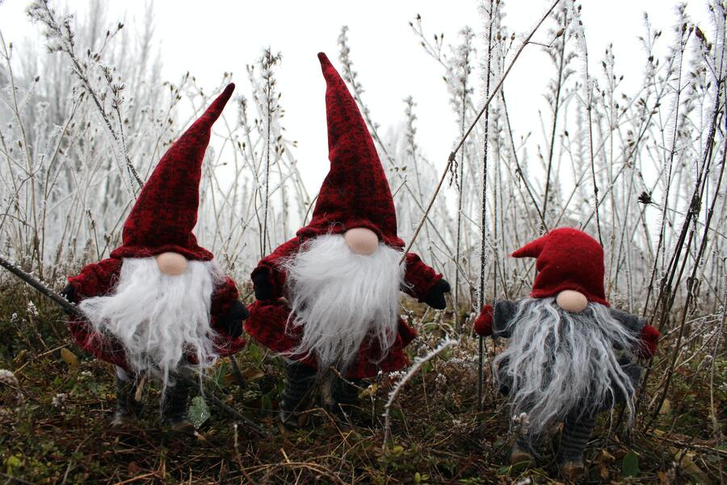

Giggle
Giggle
You laugh on your own or we tickle you!
Goblin the Green Boi
A story that nobody deserved to suffer
Goblin the green boi lived in a small village called bottle.
He was very happy and sad at the same time, kind of like the most of us.
He liked to eat dirt for breakfast and sand for dinner although it was
pretty bad for his health. Not that it mattered 'cause Goblins are imaginary
creatures and they would not get sick... unless the writer had a very bad day.
Comming back to the point, Goblin the Green boi was Very Red. Don't belive
me! Too bad you have to if you wanna continue to learn about our Green Boi here.
So, One day green boi farted, just farted for no good reason and he is the only
character in this story so he could not push the blame on anyone else. The fart
was not stinky at all it. Actually it had a quite plesant cookies and cream smell.
Again u don't belive me do you! You know what whatever, I don't even care. You think
you can do better than me. Go on then, Go on and write a story about Green boi!

(IMP) The project source code can be found a here!